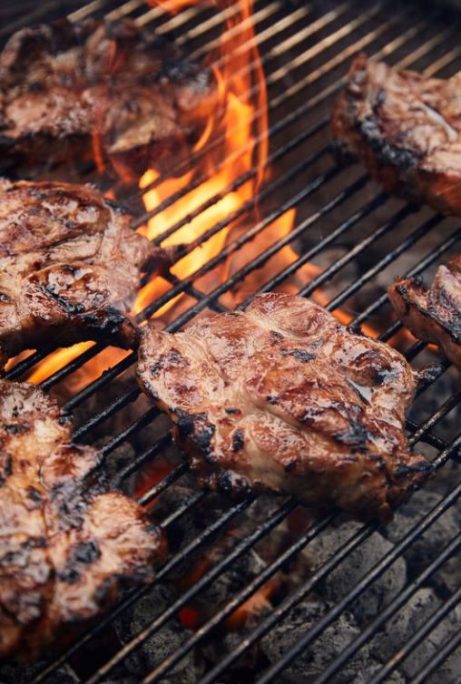

Recipes
Meaty Recipes
Sadza

Sadza (pronounced Sa-dzaa)is the most eaten food in Zimbabwe, making it the staple food. Seeing as maize thrives in the Zimbabwean climate, most households tend to grow this crop. This is then ground into a powder known as upfu. Own its own sadza has no taste, however it can be served with almost any relish of ones choice. To prepare sadza follow this recipe: Sadza Recipe
Mazondo -Cow trotters
Mazondo or cow heels is one of Zimbabwe's most iconic dishes. It particularly best served with sadza and green leafy vegetables. These can be bought directly from a butchery or can be available when a cow is slaughtered on special occasions. In a rural home, these are smoked inorder to preserved them, due to limited access to refrigerators. These are particularly time consuming to prepare, hence require adequate planning. The recipe to make delicious can be found here: Recipe for Mazondo.
Braai
Its not a celebration in Zimbabwe if there is no meat. Particularly braai meat. This is just another term for a barbecue. Mostly on celebtrations like birthdays, Christmas and New Year's it is not unusal to have some pork chops or ribs on a braai stand. This brings the whole family together both young and old. To enjoy some braai meat, follow this recipe: Braai Recipe
Tripe

Maguru (tripe) is one of Zimbabwe's most popular traditional dishes. Zimbabweans, especially those who live in rural areas, always look forward to maguru whenever a beast (cow) is slaughtered. This treat tastes fantastic when served with sadza. You can find the recipe here: Tripe Recipe.
Mixed Beef and Kale

Beef Haifiridzi is a popular dish many Zimbabweans grew up eating. This dish takes its name haifiridzi from Highfield, one of Zimbabwe's oldest suburbs in the its capital Harare. Houses around Highfield and many other suburbs across Zimbabwe usually have a small garden in the backyard growing leafy greens. Taking the leafy greens and adding to the meat instantly beefs up your dish allowing you to feed many. You can find the recipe here : Haifiridzi Recipe.
Pork Bones

When it comes to pork, no meat goes to waste. Pork bones are absolutely delicious. It is truly possible to consume them without leaving an trace, but only when the bones are cooked to a perfect tenders. Follow the recipe below to achieve this: Pork Bones recipe Recipe.
Vegetarian Food
Pumpkin Leaves ~ Muboora

Muboora (Mu-bo-oo-ra) is a highly nutritious vegetable hence its popularity. This can be consumed as a vegetable, cooked with or without peanut butter. Since it is hard on the teeth baking soda or ash residue is added to it, softening its texture. The recipe can be found here: Muboora Recipe
Peanut Butter Rice ~ Mupunga une Dovi

Rice with Peanut butter is a common meal among most Zimbabwean ethnic groups. This almost comes second to sadza as most common source of carbohydrates. This can be served with stew or consumed plain. Follow this recipe: Peanut Butter Recipe
Peanut butter porridge ~ Bota

Bota (mealie-meal porridge) is something that just about every Zimbabawean has had as a child growing up and even as an adult. It has been passed down from generation to generation and it's most certainly a part of Zimabawean dishes. Its more like making sadza and cutting the process half way through. You can find a link to the recipe here: Porridge Recipe